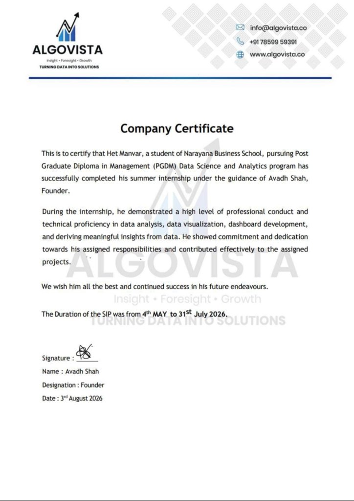

Data Analyst Intern
4 May 2026 – 31 July 2026Algovista Analytics LLP · Ahmedabad, India
PROJECT EXPOSURE & RESPONSIBILITIES:
- Engineered client-facing Power BI dashboards and visual KPI scorecards for executive stakeholders.
- Conducted exploratory data analysis (EDA) across multi-table retail and operational datasets to detect anomalies.
- Established automated Power Query ETL pipelines, ensuring data hygiene and consistency across reports.
KEY LEARNINGS & INDUSTRY EXPOSURE:
Star-Schema Data Modeling: Architected fact and dimension tables, relationship cardinalities, and prevented bidirectional cross-filtering traps.
Advanced DAX Formulations: Mastered dynamic measures (`CALCULATE`, `FILTER`, `SAMEPERIODLASTYEAR`) for MoM/YoY trend tracking.
Client Requirement Translation: Learned to bridge ambiguous business problems into crisp, actionable visual metrics.
Dashboard Optimization: Reduced visual rendering latency on high-volume tables via DAX query tuning and data type normalization.
